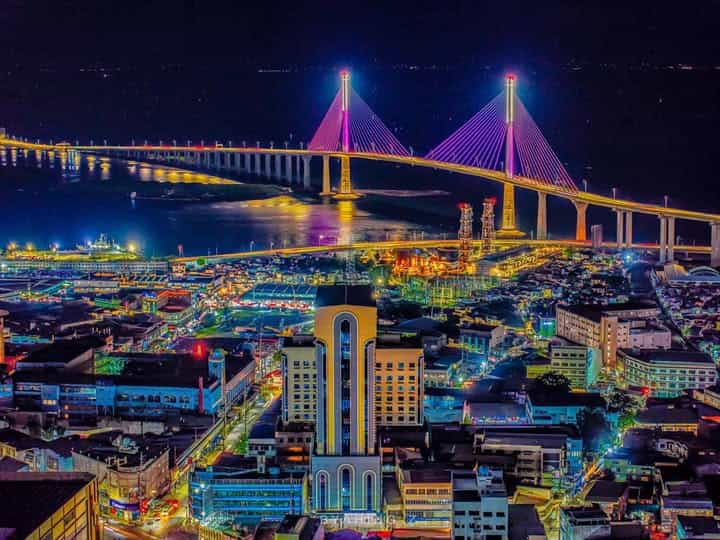
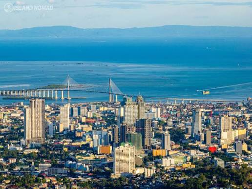
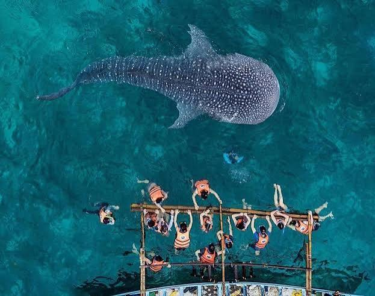
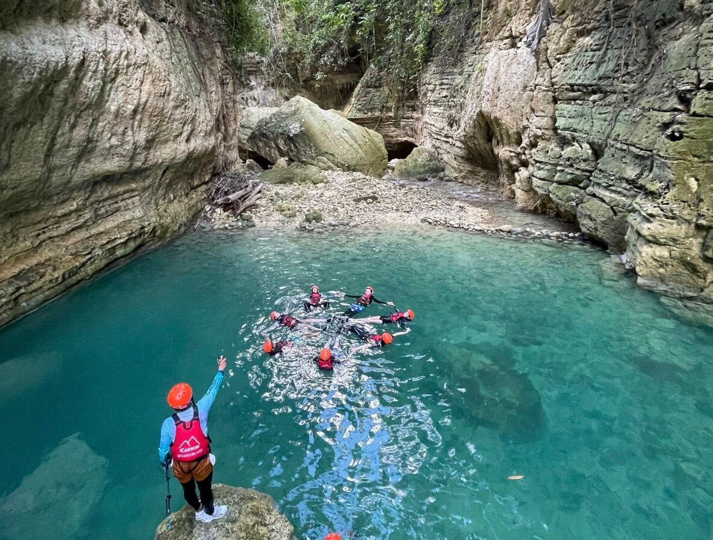
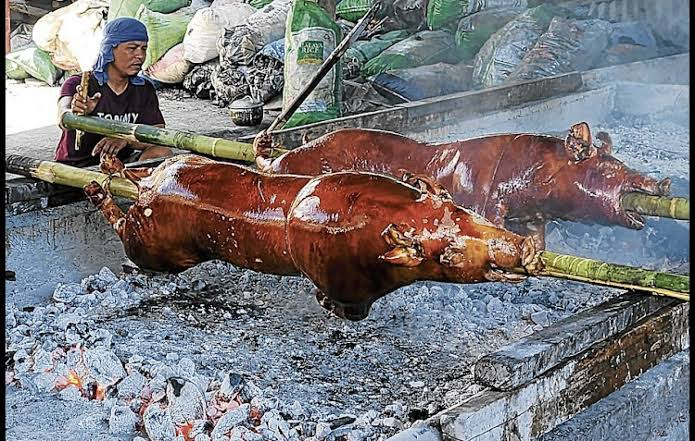
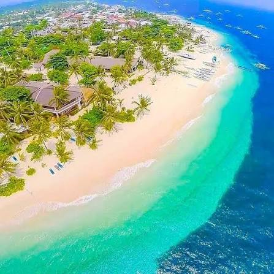

Cebu is a province in the Central Visayas region of the Philippines, made up of a long, narrow main island stretched between mountains and coastline, plus over 150 surrounding islands and islets. It's a mix of everything: historic Cebu City (the "Queen City of the South") in the south, laid-back fishing villages, white-sand islands like Bantayan and Malapascua in the north, and mountain towns known for waterfalls and adventure trails. Add in centuries-old Spanish colonial landmarks, a thriving food scene, and some of the best diving spots in Asia, and you get an island that blends history, nature, and modern city life in one place.


Visitors are drawn to Cebu's variety — you can swim with whale sharks in Oslob in the morning,

canyoneer through waterfalls in Badian by afternoon,

and eat fresh lechon (Cebu's famous roasted pork) by evening.

The beaches are postcard-worthy, the diving and snorkeling are world-class (thresher sharks in Malapascua, turtles in Moalboal),


and the local culture is warm and welcoming. It's also affordable and easy to get around, which makes it appealing for both backpackers and families.

Located on Gorordo Avenue in the Lahug district of Cebu City, the Cebu City Philippines Temple is a Church of Jesus Christ of Latter-day Saints temple that serves members throughout the Visayas and Mindanao regions. It was the second such temple built in the Philippines, following the Manila Philippines Temple, which was dedicated in 1984.

While it's a place of worship rather than a typical tourist attraction, its beautiful grounds and elegant design make it a peaceful landmark in Lahug, one of Cebu City's central business and residential districts — worth a mention for visitors interested in the island's mix of cultures and faiths.
Cebu isn't a one-trip destination — there's always something new to explore, whether it's a different island, a hidden waterfall, or a food spot they missed the first time. Beyond the sights, people often say it's the hospitality and genuine friendliness of Cebuanos that makes them want to return.

Combine that with reliable good weather most of the year, affordable travel, and a growing number of resorts and experiences, and Cebu becomes less of a checklist destination and more of a place people build a relationship with over multiple visits.